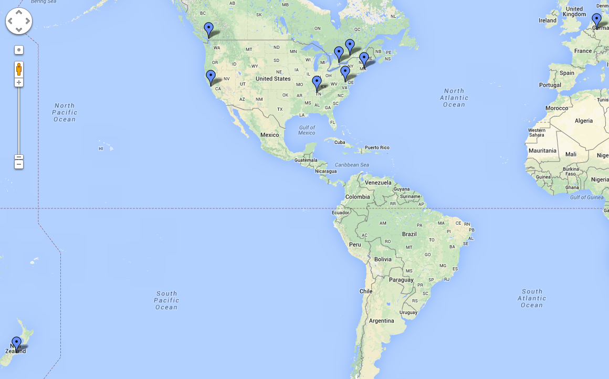
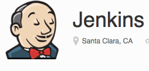
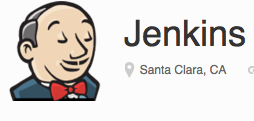
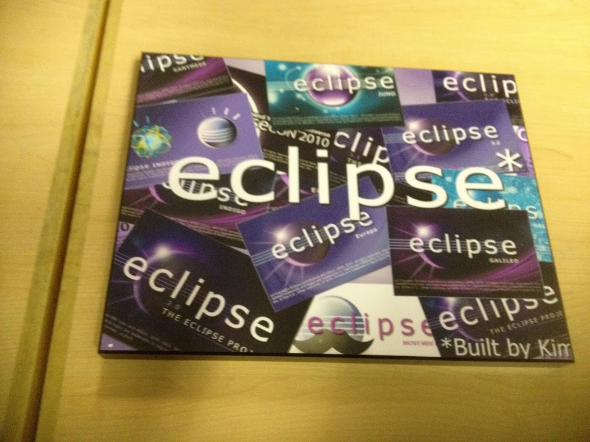
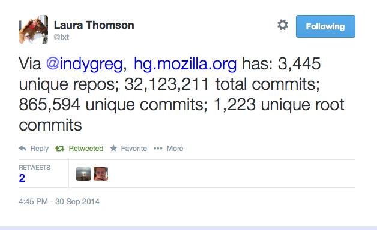
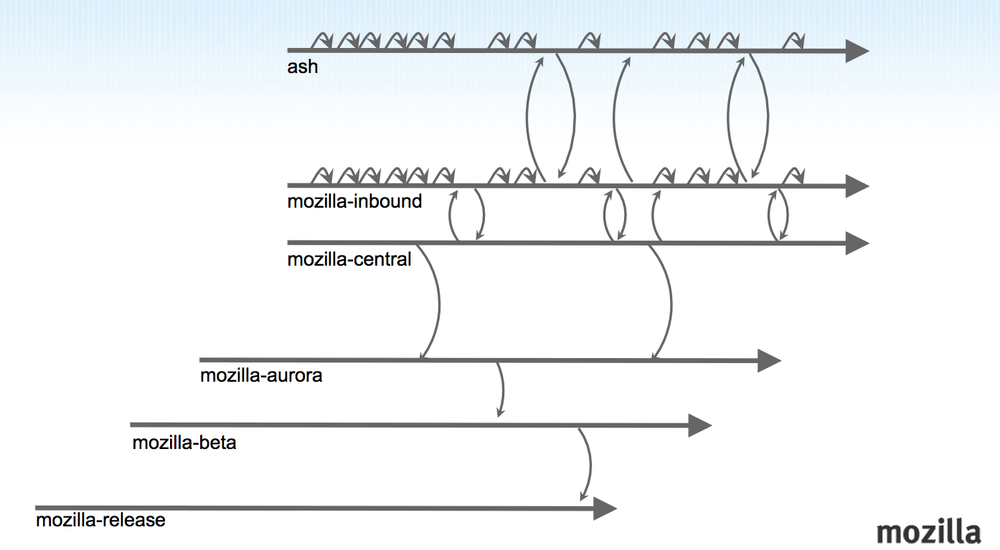
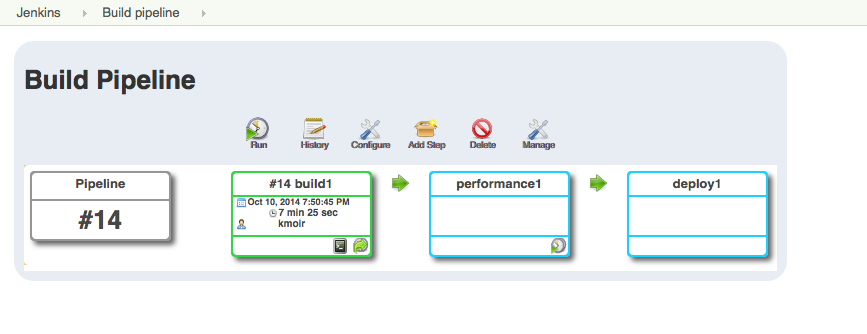

Release
Engineering 101
Building the Pipeline
PLOW Lecture, Ecole Polytechnique, October 2014
Your instructor Kim Moir / @kmoir
This presentation https://github.com/kmoir/Releng-tutorial
Outline - Lectures
- Introductions
- Overview of Release Engineering
- Continuous Integration
- Build and Test pipelines
- Scaling your CI
- REST APIs
- Further reading
Outline - Labs
- Using your AWS Instance and Git
- Setup a build on Jenkins
- Build from commit on Jenkins
- Invoke build and test scripts
- Add test results report
- Add Jenkins Plugins
- Create a pipeline by chaining jobs together
- Query Jenkins REST API
- Challenge Exercise
About: me

Mozilla Releng Worldwide
About: you
?
© Forest Wander, Creative Commons by-nc-sa 2.0
What is release engineering?
“ a sub-discipline in software engineering concerned with the compilation, assembly, and delivery of source code into finished products or other software components. --Wikipedia ”
We build pipelines
An old rusty pipe on Deception Island in Antarctica. February 2009 © Ville Miettinen, Creative Commons by-nc-sa 2.0
Role of the Release Engineer
- Focus on writing code to build a pipeline versus a product
- scope depends on where you work
- scale depends on
- number of products
- number of platforms x supported versions
- number of tests
- number of commits
- release cadence
Committing code is only the first step
- Build, test, package, sign and deploy
- mobile and desktop apps
- social media, banks, web sites for online retailer...
- on multiple platforms
- Desktop:Windows, Linux, Mac...
- Mobile: Android, IOS, FirefoxOS, Blackberry...
- Other: Trains, planes, cars, and drones...
if software then releng
- Akamai, Facebook, Google, LinkedIn, Twitter
- Amazon, Mozilla, Etsy, Neflix, Tasktop
- Oracle, IBM, HP, Microsoft, RedHat
- NASA, Boeing, Swiss Railways
- QNX, Hortonworks, Shopify, Puppet
- Open Source communties like
- Linux, Apache, Mozilla, Eclipse, Gentoo, Debian
- To do: replace with images
Chuck Rossi, release engineering, Facebook
start 1:38 end 5:30
Release Engineering Focus
- Schedule
- Quality
Features- = shipping quality products on time
Releng as a Force multiplier
- Optimize the pipeline
- Make the development team as a whole more effective
- Reduce the end to end build time by 50%?
- Scale testing in the cloud to reduce wait times?
- Ship a release in a day?
- Implement a new build system?
Scale
- At Mozilla we run about 4k build jobs and 10k test jobs a day
- 80% of builds and 50% of tests run on cloud instances
- Build farm consists of 6000 devices
- Scaling isues are fun!
Tools
 

John O'Duinn's Mozilla release pipeline

Selena Deckelman's diagram of Mozilla Release Engineering flows
Other related disciplines:
Configuration Management
Build, Test and Release Automation
© Ian Britton, Creative Commons by-nc-sa 2.0
Continous Integration/Deployment
- Evaluating and writing tools
- Optimizing the pipeline for shorter end to end times
- Removing bottlenecks then finding more
- Reducing costs and scaling capacity
Release Management
Repository Management
Branching Strategies
Package and Dependency Management

© xkcd - Dependencies - Randall Munroe
{kind=link}
Going from 3 week to Daily releases
Daniel Zapata, software engineer, Netflix
0:44-3:15
Testing and Quality Assurance
- Porting tests to new platforms
- Writing Test harnesses
- Unit tests
- Performance tests
- Regression testing
Building a physical device lab
Our project
- Setup a simple build pipeline using Jenkins on AWS
- Install additional Jenkins plugins
- Query Jenkins build status using REST API
Lab 1: Using your AWS instance
Goal: Login to your AWS instance via ssh. Query the packages that are available on it
- AWS = Amazon web services
- Shared cloud resources
- Different instance types - different resources - memory, disk, CPU
- We are using a m3.large instance type running Ubuntu 14.04
Lab 1: Login to your instance
- ssh -l username hostname
- if needed, you can sudo - root
- look at packages installed
dpkg | more dpkg -l | grep jenkins
Lab 1: Git
- Git is a distributed version control system
- Git Design Goals: fast, secure, distributed
- Each commit has a corresponding hash key
- Everyone has a local copy of the history
Lab 1: Git - quick command guide
git clone repo_name #clone a repository locally cd repo_name vi my_file git add my_file #add my_file to git tracking git status #see the status of the git repository git commit -a -m "a comment" #commit the change to the local repository git push #push the change to the remote repository git branch #show current branch git checkout -b branch2 #create new local branch
Lab 1: Git exercise
cd /home/ubuntu
git clone https://github.com/salimfadhley/jenkinsapi
cd jenkinsapi
git branch
git tag
git log
git status
git config --global user.name "Your Name"
git config --global user.email you@example.com
Lab 2: Continuous Integration
- Everything in version control - build, test and deployment scripts
- Automate all the things: Build, test, deployment, update process
- Build on commit
- Fix problems as they arise
- Popular CI servers
Lab 2: Jenkins
Lab 2: Jenkins
- Jenkins welcome page
- at your machine's http://fqdn:8080
Lab 2: Jenkins login
- Select login in on left hand side
- Username and password are on whiteboard
- Select Remember me on this computer
Lab 2: Jenkins: Create a job
- Select New Item on left side of screen
- In Item name give your job a name
- Select Freestyle project and select OK
Lab 2: Jenkins: Clone from Git
- Under Source Code Management select Git
- Under Repository URL enter the path to your local git repository i.e. /home/ubuntu/jenkinsapi and select Save
- Then select Build Now on the left hand side of the screen
Lab 2: Jenkins: Build Results
- When the build finishes, look Console Ouput
Lab 3: Jenkins: Build on Commit
- Select Back to Project
- Select Configure
- Select Poll SCM
- Under Schedule enter H/2 * * * * to poll git every two minutes
- Select Save
Lab 3: Jenkins: Commit a file
ubuntu@ip-172-31-31-167:~/jenkinsapi$ cat TODO
TODO:
* Add a testsuite (preferably nose or py.test) which doesn't rely on a local jenkins setup (or instantiates one during test)
* Clean up the fingerprint code
* Clean up the resultset and results code
* Make all objects inherit off jenkins_base where that makes sense
* Add ability to add/modify/delete jobs
* Add ability to query jenkins for plugin data
ubuntu@ip-172-31-31-167:~/jenkinsapi$ vi TODO
ubuntu@ip-172-31-31-167:~/jenkinsapi$ git commit -a -m "updated TODO"
[master d55e7e2] updated TODO
Lab 3: Jenkins: Look at job output
- Another job should start within 2 minutes
- But only if there is a new commit
Build on Commit vs build on Trunk
Why is it important?
Bisect, fix bustage or backout
- Use tools such as
- Backout the change set or fix the code
Lab 4: Add more build steps
- Select your build
- Go to Configure
- Under the Build heading, select Add build step
- Select Execute shell
Lab 4: Add more build steps
- Text to put in the Command box
chmod 755 $WORKSPACE/jenkins_build.sh
$WORKSPACE/jenkins_build.sh
- Select Save
- Select Build now
- The build will take about 7 minutes
- What can you tell from the build output?
Lab 4: Add Test Results report
- Go back to your project
- Select Configure
- Under Add post-build action
- Select Publish JUnit test result report
- Enter nosetests.xml
- Enter Save and rerun your build
Lab 4: Test Results report
- Go back to your project
- On left hand side, select test result
Lab 4: Break things
- Go change some code in the repository to break the build
- i.e. comment out some files in the code
Lab 4: Bonus labs
- Write a script to generate many commits to your git repository
- Add additonal excecutors to the Jenkins install
- Look at the number of queued jobs
Lab 5: Add a plugin
- On the left hand side select Back to Dashboard
- On the left hand side select Manage Jenkins
- Select Manage Plugins
- Select the Available tab
- You'll see a list of available plugins
- Check the Build Pipeline plugin
- Select Install plugin
- Select Download now and install after restart plugin
- Select Restart Jenkins when installation is complete and no jobs are running
Lab 5: Restart Jenkins to enable new plugins
- Will take a few minutes to complete
- After Jenkins has restarted, verified that the Build Pipeline plugin is listed under the installed tab
- Go to http://your_jenkins_server/restart if it doesn't restart automatically
Lab 5: Add a new build pipeline view
- Select My Views on the left hand side
- On the views pages, select + to add a new view
- Select Build Pipeline View
- Select OK
- Enter Build Pipeline for the name
- The defaults are okay, select OK
Lab 5: Look at build pipeline view
Lab 5: Add two new build jobs
- Select Jenkins to go back to the dashboard
- Select New Item on left side of screen
- In Item name give your job a name like Performance1
- Select Freestyle project and select OK
- Add Build step and select Execute Shell
- echo "$JOB_NAME is running"
- Select Save
- Repeat these same steps for a job called Deploy1
Lab 5: Configure chained builds
- On the Jenkins dashboard select build1 and then configure
- Select Add post-build action
- Select Trigger parameterized build on other projects
- Select Projects to build and select performance1
- Select Add Parameters
- Select Current build parameters
- Select Save
Lab 5: Configure chained builds (2)
- Repeat these same steps so the performance build triggers the deployment build

Lab 5: Run builds and look at pipeline
- Look at the pipeline view - does it show build -> performance -> deploy
- Run the performance and deploy tests (to save time) or build1 if you want 
Lab 5: Bonus
- Implement another pipeline that runs from a diferent branch or tag
- Hint: You can copy existing jobs and modify
Lab 6: REST APIs
Challenge Exercises
- Create a new build pipeline with a different open source project
- Examples...
- Query the REST API of an open source project and plot it's history
- Examples...
Further Reading
- Continuous Delivery - Jez Humble and David Farley
- ProGit - Scott Chacon
- The Phoenix Project - Gene Kim, Kevin Behr and George Spattford
- Release It - Michael T. Nygard
- Code as Craft (Etsy Tech blog)
- Netflix Tech Blog
- Planet Release Engineering (Mozilla)
- Contributing to Mozilla Release Engineering
- Making Software - edited by Greg Wilson